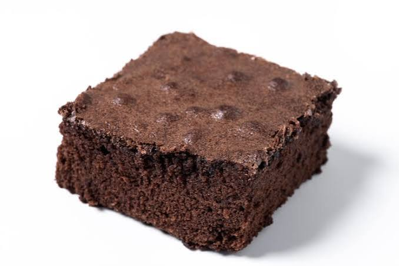

I love brownies. I also love my airfryer. These are my favorite brownies to make because for some reason, I can never ever make box brownies very well. Somehow brownies made from scratch turn out better for me.
I don't have much to say about these. They're easy to make and have a nice deep chocolate flavor. Most importantly, they are fudgy and NOT cakey. If you like cakey brownies, YOU NEED TO LEAVE. Might as well just go make a cake or buy a cake. Brownies should be fudgey or chewy. NEVER cakey. Now that that's settled, let's look at these ingredients.